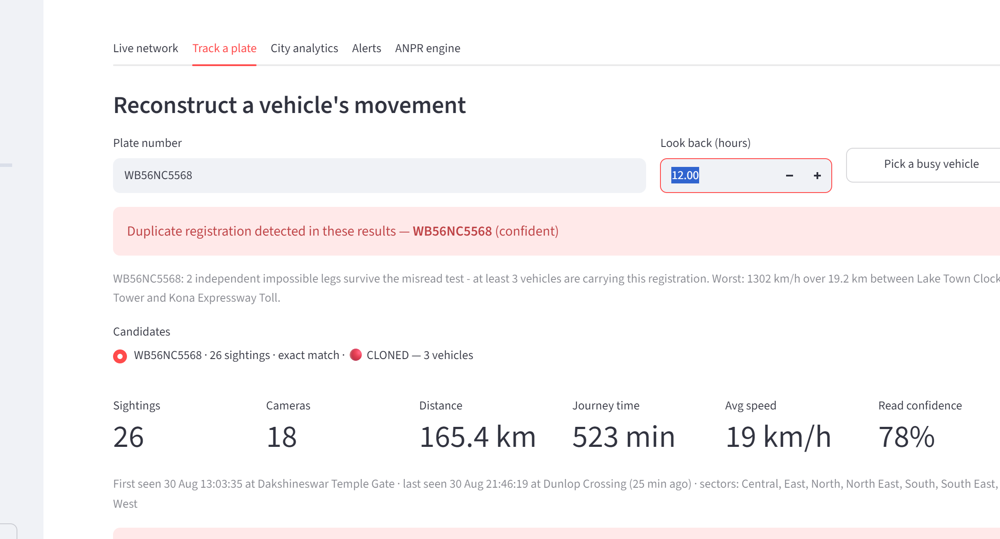

05
Two things we built ourselves
Neither is a library we installed. Both came out of measuring where the system was
losing accuracy, and both use the camera network rather than the image alone.
1 · Recovering the readings a camera failed
Using spatial and temporal context to
constrain recognition is an established idea; what is ours is the implementation, and
the acceptance rules that stop it inventing answers.
When a camera cannot read a plate confidently the reading is thrown away — correct at
the time. But minutes later the neighbouring cameras have reported, and whatever
drove past the failed camera almost certainly appears in one of those lists. So rather
than guessing from the 13.6 trillion registrations the plate grammar admits, the system
scores the few hundred plates the neighbours actually saw against the original blurred
image and asks which one fits best.
Result on the same six-hour day. The system refused
1,007 readings. Only the 25 it had actually put through the reader keep their evidence
— the rest were never decoded, so there is nothing to re-score. Of those 25 it
recovered 14, and all 14 were correct. Eleven were genuine repairs of
a wrong reading rather than near-misses: DL3HMV8199 became
OD39HMV8199, a different state and four different characters.
Safeguard. A recovered plate
is stored in a separate table and labelled inferred, never mixed with plates
that were actually read. An inference is a hypothesis with evidence attached, not an
observation — and a guess must never become the evidence for another guess.
2 · Catching duplicated number plates
A cloned plate — the same registration on two vehicles — shows up as a physically
impossible journey. The system checks for this automatically the moment an
operator searches, rather than waiting for somebody to notice.
The trap we had to design around
Our reader is right about 73% of the time, which means it
sometimes misreads vehicle X's plate as vehicle Y's — and two different vehicles
wrongly sharing one plate number looks exactly like a clone. Flagging every
impossible journey would turn our own reading errors into accusations against innocent
motorists. So before the system will call something a clone it must rule out three
cheaper explanations: that one reading was a misread of a similar plate genuinely
nearby; that either reading was low-confidence; or that the two cameras are close
enough for a clock error to explain it. Only what survives all three is reported, and a
single piece of evidence is labelled suspected rather than confirmed.

Figure 5 — searching for a plate raised this unprompted, before any
result was opened: the registration is on at least three vehicles, and the worst pair
implies a journey at 1,302 km/h.